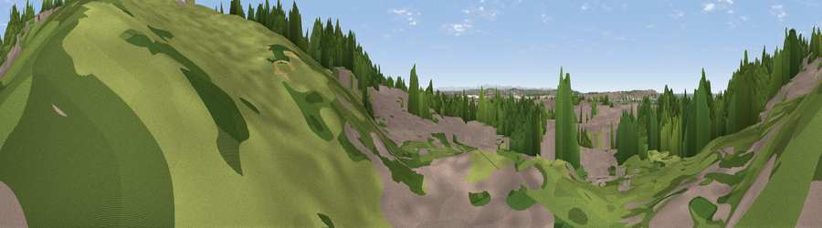

Viewpoint near Liverpool
#40153 in England · top 81% of its area beats it · near LiverpoolWhere it is
The exact computed spot (SJ 35385 92198). Click the marker for map links.
The view, rendered

A 360° render of this exact spot computed from the terrain model, tree cover and land cover — summer colours, afternoon light, calibrated against photographs of famous viewpoints. Real trees, hedges and buildings will differ in detail.
The panorama
Grey silhouette: terrain skyline in each direction (720 bearings, Earth curvature and refraction included). Dashed green: skyline with trees (+15 m) and buildings (+8 m) as obstacles. Blue strip: how far the ground is visible on each bearing.
Where the view opens
Wedge length = distance to the farthest visible ground on that bearing (vegetation-aware). Rings at 10, 25 and 50 km.
What fills the view
47% built-up · 28% woodland · 21% grassland · 4% water
Angular shares of the visible panorama (visual magnitude), not map area. Landscape diversity 0.51 (0–1 Shannon).
Key numbers
More beautiful places nearby
The staircase of upgrades: each row has a higher view potential than everything closer. Driving times are estimates from straight-line distance, calibrated against real road routing — check an actual route before setting out.
| Place | Direction | Drive | Score |
|---|---|---|---|
| Viewpoint near Liverpool | NNE · 0 km | ~1 min | 39.2 |
| Viewpoint near Liverpool | SE · 0 km | ~1 min | 49.0 |
| Gorse Hill | WNW · 5 km | ~11 min | 56.5 |
| Viewpoint near Wallasey | WNW · 6 km | ~12 min | 59.9 |
| Viewpoint near Bidston | WSW · 7 km | ~15 min | 61.6 |
| Thurstaston Hill | SW · 13 km | ~24 min | 65.1 |
| Viewpoint near Caldy | WSW · 14 km | ~26 min | 68.0 |
| Viewpoint near Far Moor | ENE · 19 km | ~33 min | 72.8 |
53.42260, -2.97379 · source: osm viewpoint · position refined by local search. Computed location — check access rights before visiting.